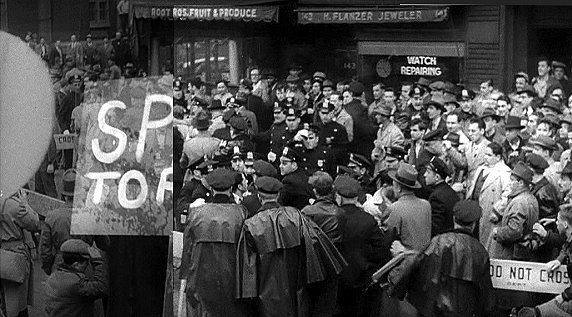
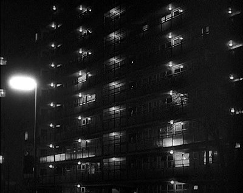
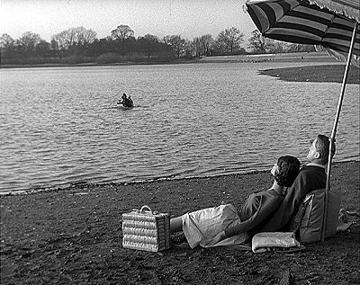
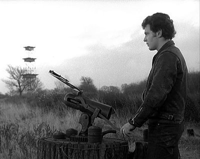
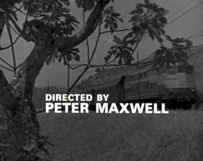
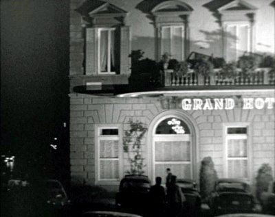
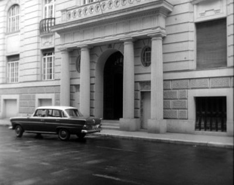
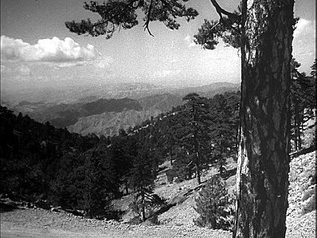
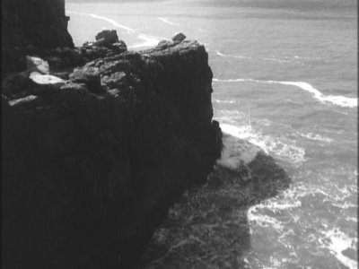

|
|
HELP FIND THE FOLLOWING LOCATIONS
PAGE 86
DANGER MAN: The Affair At Castelevara (Quentin Lawrence: 1964)8th Avenue/W. 17th Street, New York USA - Crowds gather to protest the imprisonment of Ramos Torres.(Labour Day, 1950) https://youtu.be/TYApGxBziPs?t=17)

DANGER MAN:
Such Men Are Dangerous
(Don Chaffey: 1964)
Unknown 1
ñ Drake and his comrades are
told to ëlive it upí in London
and are sent to this luxurious hotel.

Unknown 2 ñ Drake emerges from a lake in scuba gear and fires a harpoon gun at a dummy during a training exercise.

Unknown 3 ñ Whilst walking the grounds Drake finds Diana clay pigeon shooting.

DANGER
MAN: Have
a Glass Of Wine
(Peter Maxwell: 1964)
Unknown 1
- John Drake follows
Kathleen Mary Martin as she travels by train from Paris to Burgundy.

St Gegis Hotel (formerly
Grand Hotel), Piazza Ognissanti, Florence, Tuscany, Italy -
John
Drake has followed Kathleen Mary Martin from Paris to a hotel in
Burgundy. He
checks in.
Identified by Sietse Postma,
February 2025
Also used in the film Le Ragazze di San Frediano (1955)

DANGER
MAN: Youíre
Not In Any Trouble, Are you? (Don Chaffey: February
1965)
41 Reisnerstrafle, Vienna - John Drake
goes straight
to the British Embassy when he arrives in Rome to investigate the death
of Bill
Ellis.
(Identified by Sietse Postma, August 2023)

DANGER
MAN: The
Brothers (Charles
Frend: ????)
Unknown 1 ñ
Establishing shot of Sicilian countryside.

DANGER
MAN: The
Gallows Tree (Michael Truman: 1959
Unknown 1
ñ John Drake contemplates
just how rocky the cliffs are.

Think you know a spot? Need a bigger image? Email me.
< Previous | Index | Avengerland | Next >
Copyright © 2021 Anthony R. McKay